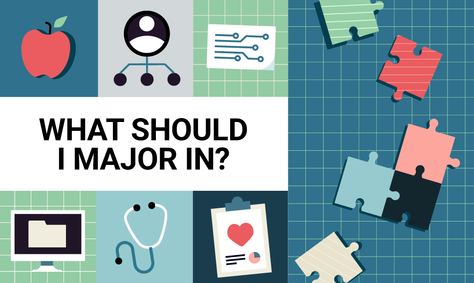

Who knows what they want to major in anyway?
To be honest I never really anticipated finding myself in this position. For pretty much as long as I could remember, I was convinced I was going to become a scientist. Whether it be biology or chemistry, I knew the classes I enjoyed the most every single year were those science classes. Mathematics was the bane of my existence, a topic I had neither the talent nor the patience for. I would never choose a career with that as the focus.
Even when it came to applying to college, I applied to colleges based on googling “best colleges for science” and then just choosing some that sounded like they had cool programs. Going into college my aspirations had changed a bit, but I was still of the belief I would become a scientist. I entered UCLA in 2021 as a Biology major, which was what I applied for in most of the applications I sent out. The first few quarters were fun, I mostly took the chemistry courses and math courses required for lower division life science requirements. To my own surprise, I really enjoyed the math for life scientists (shoutout Professor Jukka) but I really enjoyed the chemistry classes too. It wasn’t until my spring quarter that I was finally able to take what I came here for, a biology class.
It started off fine it wasn’t exactly some kind of dramatic realization I came to immediately. As the quarter progressed though I found myself falling asleep during lecture and just not being able to invest myself into the content. At first, I thought it was a general problem with my concentration and work. At the same time though, I was taking organic chemistry and seemed to have no issues staying alert in that class. As the year ended, I wasn’t sure if I truly wanted to be a biology student for the rest of my 4 years. That being said, I had already signed up for my classes for the next fall.
At first I refused to think of even leaving the life sciences department. If I left, what was the point of my entire first year? Did I just waste money and time? I spent my time reading about every offered major on the UCLA course websites, trying to decide what I really wanted to learn about. When I truly thought about it, I realized that maybe my enjoyment for the life sciences math wasn’t some random exception. After all, I had really enjoyed my time taking AP Statistics back in high school. Despite that, I feared not being proficient enough for the math and thought things might just be easier if I stayed doing what I was doing. After all, I couldn’t even enroll in new classes until much later as new student orientation had already begun.
I talked to many people before ultimately making my decision, but I entered my new path Fall 2022 as I began taking the math prerequisite courses for becoming a stats major. Though I did have to make some adjustments initially, it didn’t take long for me to realize I had made the right decision for myself. Looking back at my own interests in hindsight, it almost seemed obvious the entire time. When I was little, I loved memorizing sports statistics, especially the stats of my favorite athletes. When I first learned programming and computer science in high school, the first independent projects I created were all sports statistics related. I had just attributed this to my love for sports, but perhaps that interest was always there and I just had a mental block.
Since changing my major, I can confidently say I have no regrets at all. I’ve truly enjoyed every single class I’ve taken since that day. Every day I spend in class or working on something only furthers my belief that I’m in this for life. Getting paid to do the most fun stuff of all time? That career sounds way too good to be true, but I really cannot think of a better way to live. That being said, I don’t regret the path I was on before switching. Sometimes I think about what I could’ve done with that extra time, but there are many experiences I don’t get in that timeline. As for this timeline, I’m just going to put my head down and keep trying to learn about a field that is always changing. Living in the age of information is truly a blessing, and I fully intend to take advantage of it.
Shoutout to the entire UCLA Statistics department for providing such a fun and comprehensive education. Professor Christou you are my GOAT.